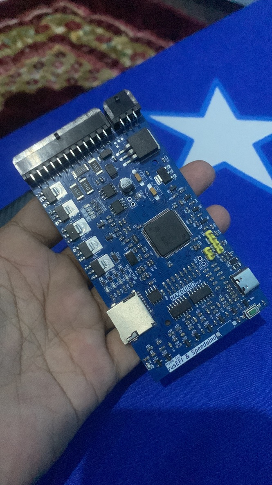
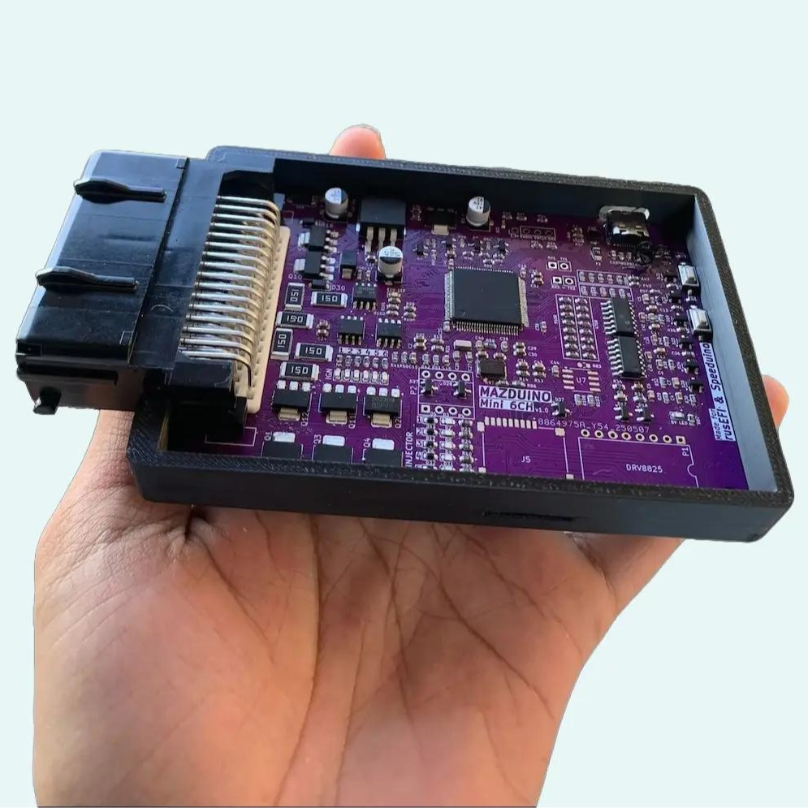

Welcome to Mazduino ECU Documentation
Welcome to the official documentation for Mazduino ECU - an open-source standalone engine control unit powered by STM32 microcontrollers and compatible with rusEFI and Speeduino firmware.
Current Products
Mazduino Compact 4ch
A compact 4-channel engine control unit designed for smaller engines and space-constrained applications.

Features: - 4 injection channels - Compact form factor - STM32F407VGT6 MCU - rusEFI & Speeduino compatible
View Complete Specifications →
Mazduino Mini 6ch
A full-featured 6-channel engine control unit for full sequential injection control.

Features: - 6 injection channels - Full sequential operation - STM32F407VGT6 MCU - Extended I/O capabilities - rusEFI & Speeduino compatible
View Complete Specifications →
Getting Started
- Choose Your Model - Select between Compact 4ch or Mini 6ch based on your engine requirements
- Install Firmware - Flash rusEFI or custom Speeduino firmware
- Configure Settings - Set up your engine parameters and pin mappings
- Start Tuning - Begin with base maps and refine for your specific application
Documentation Sections
- About - Learn more about Mazduino ECU project
- Hardware Guide - Detailed specifications and wiring diagrams
- Firmware Installation - Step-by-step firmware flashing instructions
- Configuration - Engine setup and parameter configuration
- Tuning Guide - Performance optimization and troubleshooting
Support
For technical support, questions, or contributions, please visit our community forums or GitHub repository.